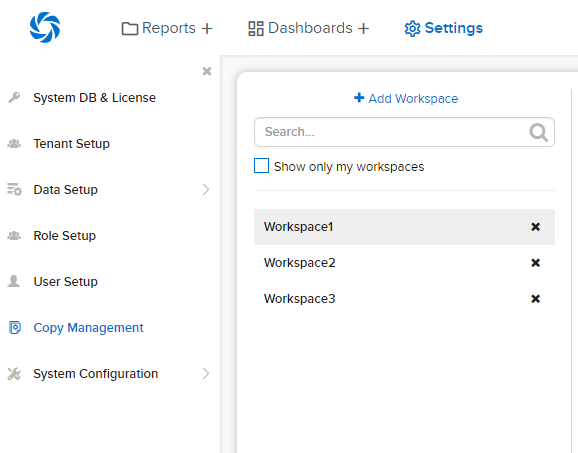
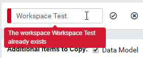
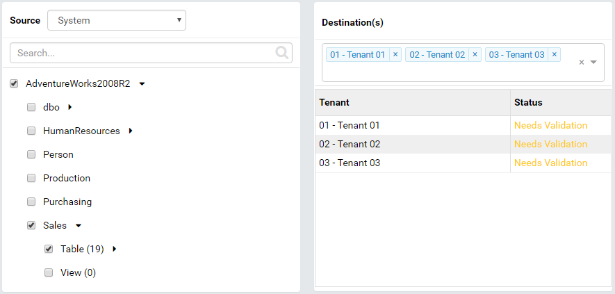
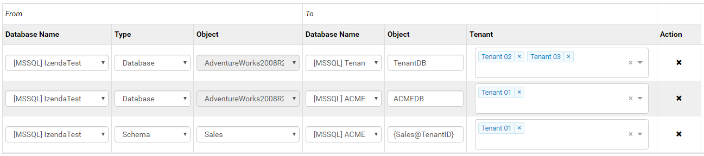
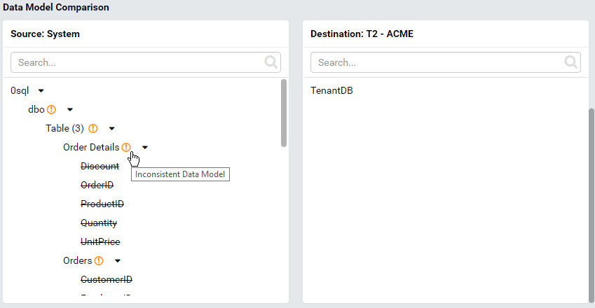

Copy Management¶
Tip
Copy Dashboard is available from release v0.22.14.
The Copy Management page allows user to:
define rules to copy data among system and tenants, including:
- logical data model
- advanced data settings
- dashboards
- reports
- tenant permissions
- role names
- roles and their permissions
validate data model consistency between two locations
save mapping rules into workspaces
View Workspace List¶
- 
Fig. 168 Workspace List
In browser, log in to Izenda as a user with Copy Management permission.
Click Settings, then Data Setup then Copy Management in the left menu.
Select the Setting Level: either System or a specific tenant.
The list of workspaces are displayed under Middle Panel.
Tick the Show only my workspace check-box to filter the list by workspaces owned by current user.
Type a partial name into the Search box to further filter the list by similar name.
- Click on a workspace to open it.
- Click the x icon to delete the workspace.
{kind=link}
Edit a Workspace¶
Clicking on a workspace in Middle Panel will open it. Each workspace contains 5 sections:
Workspace Name and created date
allows user to view workspace name and created date, and to rename the workspace.
Items to Copy Options
allows user to quickly specify groups of settings then run copy.
Source Data Model Copy List
allows user to pick specific data model items to copy instead of all visible items.
Destination Tenant List
contains the tenants to copy to.
Mappings List
contains mapping from Source to Destination physical location.
Rename a Workspace¶
- 
Fig. 169 Rename a Workspace
Click the pencil icon to rename the workspace.
Enter a new name for the workspace.
Click the check icon to confirm the new name.
The name will be checked for duplication.
{kind=link}
Items to Copy Options¶
This section lists selectable items to copy:
- Data Model
- Advanced Data Settings
- Tenant Permissions
- Roles
- Role Permissions
Configure Source Data Model Copy List¶
Source panel on the left shows visible database connections, schemas together with visible inner data model items.
Tick the checkbox next to each item to include it in the Data Model copy operation.
Destination panel on the right is the list of selected tenants to copy to, together with validation and authentication status.
Configure Destination Tenant List¶
- Click the down arrow in Destination box to see the list of tenants.
- Click each tenant to add it to the box.
- Click the down arrow again to close the list.
Note
To copy to all tenants, simply select “All Tenants” option. It will replace all currently selected tenants when selected.
Edit mappings¶
A mapping specifies the physical destination for each database connection or schema of tenant (in case the database connection or schema name in destination is different from logical data model).
- Select a database connection in Source.
- Choose the mapping type: Database or Schema.
- Select a schema from the Object list if using Schema mapping.
- For Database mapping, the Object list is already populated with the database name.
- Select the target database connection.
- Enter the schema name (expression) into Object list if using Schema mapping.
- For Database mapping, the Object list is already populated with the database name.
- Select the tenants to apply this mapping to.
- Continue to add mappings to cover all selected database connections, schemas and tenants.
Rules:
- Tenants without a Database mapping will be copied to the same database connection.
- Each schema without mapping will be copied to a schema with the same name (in the database connection specified in mapping).
For example, user needs to copy data model for schema Sales to Tenant01, Tenant02 and Tenant03.
The schemas are named Sales0x with x = 1, 2 or 3 for each tenant respectively.
Tenant02 and Tenant03 share the same physical database TenantDB while Tenant03 uses ACMEDB database on a separate server.
Following is how to configure the workspace:
Tick Data Model check-box in Items to Copy section.
- 
Fig. 170 Copy Sales schema
Tick the Sales schema to include it in the copy.
Select Tenant01, Tenant02 and Tenant03 as Destinations.
Add Connection to TenantDB for Tenant02 and Tenant03, and add connection to ACMEDB for Tenant03.
Add the mappings.
Fig. 171 Map database connections and schemas
{kind=link}
{kind=link}
Validate Consistency between Source and Destinations¶
Click the Validate button at the top to validate for tenants with status “Need validated”:
Each tenant will be checked for a valid mapping for each schema.
Click the gear icon (⚙) next to each tenant to open Advanced Settings page for that tenant.
Click Validate button at the top to validate consistency in data model between source and the selected tenant.
Selected objects in source will be checked for existence in data model for selected tenant by name.
Click OK to close the page.
Fig. 172 Data Model Comparison
{kind=link}
{kind=link}